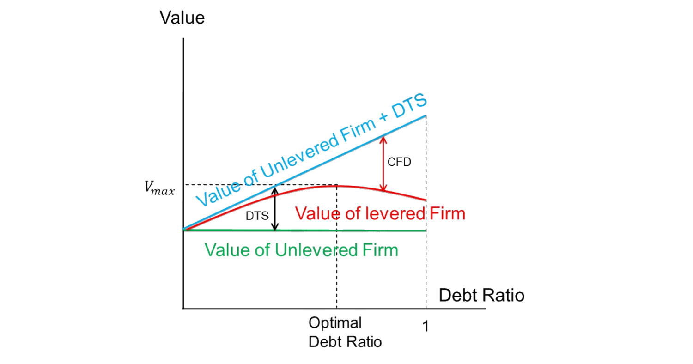

2. Debt Financing: Tax Benefit and Bankruptcy Cost
MM 基准忽略了现实。权衡理论 (trade-off theory)（Scott 1976）通过平衡债务的税收利益与破产成本，得出最优债务比率。利益 = 债务税盾 (DTS)：利息支出可抵税，公司借债等于从政府「偷钱」(§2.1)。成本 = 财务困境成本 (CFD)：债务越多破产概率越高，含直接成本（律师/贱卖资产）与间接成本（客户/员工/伙伴流失）(§2.2)。静态权衡（Fig 2.1）：DTS 随债务线性上升、CFD 非线性上升，二者交汇出最优债务比 (§2.3)。挑战：实证 DTS \(=\tau_C D\) 远大于 CFD（年违约率仅 0.7%），似乎公司该借更多债 (§2.4)。两种修正：(1) Miller (1977) 个人税——引入债券持有人利息税 \(\tau_{pB}\)、股东税 \(\tau_{pS}\)，DTS\(=[1-\frac{(1-\tau_C)(1-\tau_{pS})}{1-\tau_{pB}}]D\) (2.1) 远小于 \(\tau_C D\)；并通过「客户群 (clienteles)」异质利息税率得到均衡公司债收益 \(r^\star=\frac{r_0}{(1-\tau_C)(1-\tau_{pS})}\) 与最优债务比 (§2.5)；(2) 代理成本抬高 CFD——债务有优先权「悬」在公司头上：高债务时股东 投资不足 (debt overhang, Myers 1977)（拒绝正 NPV 项目，因收益被债权人攫取），Pari-Passu 债可缓解但受债务契约限制；反之自有现金投资时股东 过度投资 (asset substitution, Jensen-Meckling 1976)（接受负 NPV 风险项目，因股权是看涨期权、偏好高波动、把风险转移给债权人）(§2.6)。Hennessy-Whited (2005) 动态权衡：杠杆路径依赖、无目标比率、与现金流/盈利/Tobin's Q 负相关。
The MM benchmark ignores reality. Trade-off theory (Scott 1976) derives an optimal debt ratio by balancing the tax benefit and the bankruptcy cost of debt. Benefit = debt tax shield (DTS): interest is tax-deductible, so borrowing lets the firm "steal" money from the government (§2.1). Cost = cost of financial distress (CFD): more debt means higher bankruptcy probability, with direct costs (lawyers / fire-sales) and indirect costs (loss of customers/employees/partners) (§2.2). Static trade-off (Fig 2.1): DTS rises linearly in debt while CFD rises non-linearly, and their interplay gives an optimal debt ratio (§2.3). Challenge: empirically DTS \(=\tau_C D\) vastly exceeds CFD (annual default prob only 0.7%), seemingly implying firms should borrow more (§2.4). Two refinements: (1) Miller (1977) personal tax — adding the bondholder's interest tax \(\tau_{pB}\) and the equity holder's tax \(\tau_{pS}\), DTS\(=[1-\frac{(1-\tau_C)(1-\tau_{pS})}{1-\tau_{pB}}]D\) (2.1) is much smaller than \(\tau_C D\); and via heterogeneous interest tax rates ("clienteles") it pins down an equilibrium corporate bond return \(r^\star=\frac{r_0}{(1-\tau_C)(1-\tau_{pS})}\) and optimal debt ratio (§2.5); (2) agency costs raise CFD — debt has seniority and "hangs" over the firm: with high debt, equity holders under-invest (debt overhang, Myers 1977) (reject positive-NPV projects whose gains are grabbed by creditors), which Pari-Passu debt can mitigate but is limited by covenants; conversely, investing internal cash, equity holders over-invest (asset substitution, Jensen-Meckling 1976) (accept negative-NPV risky projects, since equity is a call option that prefers high volatility, shifting risk to creditors) (§2.6). Hennessy-Whited (2005) dynamic trade-off: leverage is path-dependent, has no target ratio, and is negatively correlated with cash flow / profitability / Tobin's Q.
2.1 Benefit: Debt Tax Shield
债务税盾 (debt tax shield, DTS) = 公司因将利息支出从应税收入中扣除而节省的税额。例：利息支出 100 美元、税率 35%，则减少的税额 35 美元即 DTS。（利息支出本身不征税，这部分节省的税款常称「税盾」。）
§2.1.1 公司用 DTS 从政府「偷钱」：DTS 帮我们解释「公司借债越多、价值越高」的实证正相关——既然借债提升价值，增加的部分必来自 MM 模型之外的某处。DTS 即公司从政府那里「偷」来的钱：借得越多偷得越多，价值随之上升。
§2.1.2 补贴债务：正负外部性：DTS 的存在源于美国（及许多国家）的税法允许公司从应税收入中扣除利息支出，本质上是在补贴债务：
The debt tax shield (DTS) = the amount of tax a firm saves by deducting interest payment from its taxable income. Example: an interest payment of 100 USD at a 35% tax rate gives a reduced tax of 35 USD = the DTS. (Interest payment itself is not taxable; this part of saved tax money is often called the "tax shield".)
§2.1.1 Firms use DTS to "steal" money from the government: DTS helps interpret the empirical positive relation between a firm's borrowing and its value — since borrowing increases value, the increased part must come from somewhere excluded from the MM model. DTS is the money firms "steal" from the government: the more they borrow, the more they steal, so their value goes up.
§2.1.2 Subsidizing debt: positive and negative externalities: DTS exists because the tax code in the US (and many other countries) lets firms deduct interest payment from taxable income, basically subsidizing debt:
$$\text{Operating Income}=\text{Revenue}-\text{COGS}-\text{SG\&A}-\text{Depreciation}$$
$$\text{Pre-tax Income}=\text{Operating Income}-\text{Interest Expense}$$
（COGS = 销货成本；SG&A = 销售、一般及行政费用。）债务可能对社会施加外部性。有些是负的（清算前的贱卖）；但 He and Matvos (2015) 指出也可能是正的：在衰退行业中，公司低效地为生存而挣扎，补贴债务会增加其违约与破产概率，对社会反而有益。
2.2 Detriment: Cost of Financial Distress
债务融资也可能通过引致财务困境成本 (cost of financial distress, CFD) 而损害公司。债务水平越高，违约/破产概率越高，破产在直接与间接两方面都代价高昂：
- 直接破产成本：破产程序本身引致的成本。如支付会计师、律师费用，资产贱卖，无形资产（如品牌）损失，进行中项目（如 R&D）的损失。
- 间接破产成本：破产程序开始之前引致的成本。如客户忠诚度流失、对伙伴的议价能力下降、有才能员工的离职等。
2.3 Static Trade-off
静态权衡理论（Kraus and Litzenberger 1973；Scott 1976）通过平衡 DTS 与 CFD 给出最优债务比率。图 2.1 展示 DTS 与 CFD 作为相互竞争的力量及由此得到的最优债务比。
(COGS = cost of goods sold; SG&A = selling, general and administrative expense.) Debt could impose externalities on society. Some are negative (fire-sale before liquidation); but He and Matvos (2015) point out they could be positive: in declining industries, firms inefficiently fight for survival, so subsidizing debt increases their default and bankruptcy probability, which is positive for society.
2.2 Detriment: Cost of Financial Distress
Debt financing could also hurt the firm by incurring a cost of financial distress (CFD). Higher debt levels mean higher default/bankruptcy probability, and going bankrupt is costly both directly and indirectly:
- Direct bankruptcy cost: costs incurred by the bankruptcy process itself. E.g. payment to accountants and lawyers, fire-sale of assets, loss of intangible assets such as brand, loss from ongoing projects such as R&D.
- Indirect bankruptcy cost: costs incurred before the bankruptcy process starts. E.g. loss of consumer loyalty, loss of bargaining power with partners, and the departure of talented employees.
2.3 Static Trade-off
Static trade-off theories (Kraus and Litzenberger 1973; Scott 1976) provide an optimal debt ratio as the result of balancing DTS and CFD. Figure 2.1 illustrates DTS and CFD as competing forces and the resulting optimal debt ratio.

图 2.1：最优债务比率。 无杠杆公司价值（绿）随债务比基本不变；无杠杆 + DTS（蓝）随债务比线性上升；有杠杆公司价值（红）= 蓝线减去 CFD，呈驼峰形，在最优债务比处达到最大 \(V_{max}\)。
Remark 2.1 图 2.1 中 DTS 随债务比线性上升（因假设税率固定、公司价值不变）；另一边，CFD 的非线性是合理的，因为公司随债务增多会承受越来越多的困境。
2.4 Challenge of Trade-off Theories
对权衡模型的批评基于一个实证事实：DTS 远高于 CFD。例如 DTS \(=\tau_C D\)，其中 \(\tau_C\) 为公司税率（如 35%），\(D\) 为债务当前市值。
Remark 2.2 DTS \(=\tau_C D\) 的原因：\(D\) 是债务市值，等于所有贴现支付之和；对其中每笔支付，\(\tau_C\) 比例为税收节省，故总节省加总为 \(\tau_C D\)。（此处 DTS 为债务 \(D\) 在所有未来期税盾收益的现值。）
可见 DTS 巨大。然而年度违约概率仅约 0.7%，意味着 CFD 极低。Heider and Ljungqvist (2015) 的实证表明公司在税收利益更高时确实借更多债。因此这些实证事实意味着：既然 CFD 被 DTS 压倒，公司似乎应该借过多的债——但现实并非如此。
2.5 Refinement of the Trade-off Theory: Personal Tax, Miller (1977)
为应对 §2.4 的挑战，一种思路是构造一个模型解释为何税收利益没那么大。Miller (1977) 引入个人税。
2.5.1 Personal Tax
记债券持有人利息收入的个人税率为 \(\tau_{pB}\)，股东资本利得与股利的个人税率为 \(\tau_{pS}\)（股东持股收益 = 股利 + 价格变动，后者归为资本利得/损失），\(\tau_C\) 为公司所得税率，\(D\) 为债务当前市值。则总 DTS 为 (2.1)：
Figure 2.1: Optimal Debt Ratio. The unlevered firm's value (green) is roughly flat in the debt ratio; unlevered + DTS (blue) rises linearly; the levered firm's value (red) = blue minus CFD, is hump-shaped, peaking at \(V_{max}\) at the optimal debt ratio.
Remark 2.1 In Figure 2.1, DTS increases linearly with the debt ratio (because of the flat tax rate and unchanged firm value); on the other side, the non-linearity of CFD is justifiable as the firm would incur increasingly more distress as it has more debt.
2.4 Challenge of Trade-off Theories
The criticism of the trade-off model is based on the empirical fact that DTS is much higher than CFD. For example, DTS \(=\tau_C D\) where \(\tau_C\) is the corporate tax rate (say 35%) and \(D\) is the current market value of debt.
Remark 2.2 The reason DTS \(=\tau_C D\): \(D\) is the market value of debt, the sum of discounted payments; for each of those payments, the \(\tau_C\) proportion is the tax saving, so the total saving adds up to \(\tau_C D\). (Here the DTS is the present value of the total tax-shield benefit of debt \(D\) in all future periods.)
So DTS is huge. However, the annual default probability is merely 0.7%, which implies a very low CFD. Heider and Ljungqvist (2015) provide empirical analysis showing firms borrow more when the tax benefit is higher. Therefore, such empirical facts suggest that, given CFD is overwhelmed by DTS, firms might borrow too much — which is not exactly the case in the real world.
2.5 Refinement of the Trade-off Theory: Personal Tax, Miller (1977)
To address the challenge in §2.4, one way is to provide a model that explains why the tax benefit is not that huge. Miller (1977) introduces personal tax.
2.5.1 Personal Tax
Denote the bondholder's personal tax rate for interest income by \(\tau_{pB}\), the equity holder's personal tax rate for capital gains and dividends by \(\tau_{pS}\) (a shareholder's income from holding shares = dividends + price changes, the latter classified as capital gains/losses), \(\tau_C\) the corporate income tax rate, and \(D\) the current market value of debt. Then the total DTS is (2.1):
$$\text{DTS}=\left[1-\frac{(1-\tau_C)(1-\tau_{pS})}{1-\tau_{pB}}\right]D\tag{2.1}$$
- 证明 / Proof（(2.1)：含个人税的 DTS） 设债务净回报为 \(r_D\)。 - 每期总计划利息支付为 \(r_D D\)。 - 有债务时的总税款为 \(\tau_{pB}r_D D\)（仅由债券持有人对其利息收入缴纳；公司为筹集 \(D\) 不缴税）。 - 若公司改用股权筹集等额 \(D\)，则每期此前被税盾节省的 \(\tau_C r_D D\) 现在须缴；此外公司把缴完公司税后剩余的 \(r_D D\) 全部分给这 \(D\) 股权的股东，股东收入 \((1-\tau_C)r_D D\)，须缴个人资本所得税 \(\tau_{pS}(1-\tau_C)r_D D\)。 - 故两情形每期税款之差为 (2.2)： $$\underbrace{\tau_C r_D D}_{\text{firm tax w/o debt}}+\underbrace{\tau_{pS}(1-\tau_C)r_D D}_{\text{personal tax w/o debt}}-\underbrace{\tau_{pB}r_D D}_{\text{personal tax with debt}}=\left[(1-\tau_{pB})-(1-\tau_C)(1-\tau_{pS})\right]r_D D.$$ - （净）贴现因子为同类债务 \(D\) 的机会成本 \(r_D(1-\tau_{pB})\)。每期 DTS 相同，如一份永续年金，所有未来期之和的现值为 $$\text{DTS}=\sum_{t=0}^\infty\frac{\left[(1-\tau_{pB})-(1-\tau_C)(1-\tau_{pS})\right]r_D D}{\left[1+r_D(1-\tau_{pB})\right]^t}=\frac{\left[(1-\tau_{pB})-(1-\tau_C)(1-\tau_{pS})\right]r_D D}{r_D(1-\tau_{pB})}=\left[1-\frac{(1-\tau_C)(1-\tau_{pS})}{1-\tau_{pB}}\right]D,$$ 恰证 (2.1)。\(\blacksquare\)
进一步重排 (2.1) 得 (2.3)：
- 证明 / Proof ((2.1): DTS with personal tax) Let the net return of debt be \(r_D\). - The total scheduled interest payment each period is \(r_D D\). - The total tax payment with debt is \(\tau_{pB}r_D D\) (paid only by debt holders on their interest income; the firm pays no tax for raising \(D\)). - If the firm instead raises the same \(D\) with equity, then each period the \(\tau_C r_D D\) previously saved by the tax shield is now payable; in addition the firm gives out all the remaining \(r_D D\) after corporate tax, so the shareholders of this \(D\) of equity have income \((1-\tau_C)r_D D\) and pay personal capital income tax \(\tau_{pS}(1-\tau_C)r_D D\). - So the difference in tax payments each period between the two scenarios is (2.2): $$\underbrace{\tau_C r_D D}_{\text{firm tax w/o debt}}+\underbrace{\tau_{pS}(1-\tau_C)r_D D}_{\text{personal tax w/o debt}}-\underbrace{\tau_{pB}r_D D}_{\text{personal tax with debt}}=\left[(1-\tau_{pB})-(1-\tau_C)(1-\tau_{pS})\right]r_D D.$$ - The (net) discount factor is the opportunity cost of same-class debt \(D\), i.e. \(r_D(1-\tau_{pB})\). Since the DTS each period is the same, like a perpetuity, the present value of the sum of all future periods is $$\text{DTS}=\sum_{t=0}^\infty\frac{\left[(1-\tau_{pB})-(1-\tau_C)(1-\tau_{pS})\right]r_D D}{\left[1+r_D(1-\tau_{pB})\right]^t}=\frac{\left[(1-\tau_{pB})-(1-\tau_C)(1-\tau_{pS})\right]r_D D}{r_D(1-\tau_{pB})}=\left[1-\frac{(1-\tau_C)(1-\tau_{pS})}{1-\tau_{pB}}\right]D,$$ which exactly proves (2.1). \(\blacksquare\)
Rearranging (2.1) further gives (2.3):
$$\text{DTS}=\left[\frac{\tau_C(1-\tau_{pS})}{1-\tau_{pB}}-\frac{\tau_{pB}-\tau_{pS}}{1-\tau_{pB}}\right]D\tag{2.3}$$
在现实税率下，\(\tau_{pS}\) 与 \(\tau_{pB}\) 使含个人税的 DTS (2.1)/(2.3) 可能显著低于 \(\tau_C D\)（即无个人税的 DTS）。
Remark 2.3 / 2.4 2.3：此处对债权人与公司两方一并考虑 DTS，因为两个群体收益之和才是从政府「偷」来的总钱数。换言之，蛋糕越大，则总有办法切分使双方都更满意。 2.4：据此论证，公司一旦需要筹资，应总是先借债直至 DTS $=0$，之后才转向股权。
2.5.2 Clienteles
接下来的问题是：随公司借债增多，DTS 如何变化？于是累进的边际个人利息税率进入 Miller (1977) 提出的「客户群 (clienteles)」概念。美国的市政债券免税，是所有异质家庭的完美基准。设定如下：
- 记市政债券净回报为 \(r_0\)、公司债净回报为 \(r\)，且 \(r>r_0\)。
- 设有单位测度的家庭。
- 每个家庭有相同的股权收入税率 \(\tau_{pS}\)，但异质的利息收入税率 \(\tau_{pB}\)，服从 \([0,\bar\tau_{pB}]\) 上的均匀分布。
公司债需求侧：边际投资者应在市政债与公司债间无差异，故 (2.4)：
Under real-world tax rates, \(\tau_{pS}\) and \(\tau_{pB}\) make the DTS with personal tax (2.1)/(2.3) potentially significantly below \(\tau_C D\) (the DTS without personal tax).
Remark 2.3 / 2.4 2.3: Here we consider the DTS for both creditors and firms together, because the sum of the benefits to the two groups is the total money "stolen" from the government. In other words, the bigger the pie, the more there will always be a way to slice it so both parties are happier. 2.4: Based on this argument, whenever the firm needs to raise capital, it should always resort to debt first and borrow until DTS $=0$, and only then turn to equity.
2.5.2 Clienteles
The next question is how the DTS changes as the firm borrows more. So the progressive marginal personal interest tax rate comes into play in the notion of "clienteles" proposed by Miller (1977). Municipal bonds in the US are tax-free, a perfect baseline for all heterogeneous households. The setup:
- Denote the net return of municipal bonds by \(r_0\) and the net return of corporate bonds by \(r\), with \(r>r_0\).
- Suppose there is a unit measure of households.
- Each household has the same equity income tax rate \(\tau_{pS}\) but a heterogeneous interest income tax rate \(\tau_{pB}\) that follows a uniform distribution on \([0,\bar\tau_{pB}]\).
Demand side of the corporate bond: the marginal investor should be indifferent between the municipal and corporate bond, so (2.4):
$$r(1-\tilde\tau_{pB})=r_0\tag{2.4}$$
其中 \(\tilde\tau_{pB}\) 为边际投资者的利息税率。\(\tau_{pB}<\tilde\tau_{pB}\) 的投资者需求公司债，\(\tau_{pB}>\tilde\tau_{pB}\) 者需求市政债。故公司债总需求为 \(\tilde\tau_{pB}/\bar\tau_{pB}\)，结合 (2.4) 重写为 \(\dfrac{\tilde\tau_{pB}}{\bar\tau_{pB}}=\dfrac{1-r_0/r}{\bar\tau_{pB}}\)。
公司债供给侧：公司借债直至 DTS $=0$ (2.5)：
where \(\tilde\tau_{pB}\) is the interest tax rate of the marginal investor. Investors with \(\tau_{pB}<\tilde\tau_{pB}\) demand the corporate bond, and those with \(\tau_{pB}>\tilde\tau_{pB}\) demand the municipal bond. So the total demand for the corporate bond is \(\tilde\tau_{pB}/\bar\tau_{pB}\), which combined with (2.4) is rewritten as \(\dfrac{\tilde\tau_{pB}}{\bar\tau_{pB}}=\dfrac{1-r_0/r}{\bar\tau_{pB}}\).
Supply side of the corporate bond: the firm borrows until DTS $=0$ (2.5):
$$\left[1-\frac{(1-\tau_C)(1-\tau_{pS})}{1-\tau_{pB}}\right]D=0\ \Longrightarrow\ 1-\tau_{pB}=(1-\tau_C)(1-\tau_{pS})\tag{2.5}$$
(2.5) 右端假设为常数；\(\tau_{pB}\) 是关于边际投资者的，公司借越多则边际投资者 \(\tau_{pB}\) 越高，故 (2.5) 左端单调递减，恰有一点使 (2.5) 成立。
Miller 均衡：供给等于需求，意味着需求债券的边际投资者恰是公司想借的最后一个。由于投资者由其利息税率 \(\tau_{pB}\) 唯一标识，均衡条件为
The RHS of (2.5) is assumed constant; \(\tau_{pB}\) is for the marginal investor, so the more the firm borrows, the higher it is, making the LHS of (2.5) monotonically decreasing — there is exactly one point where (2.5) holds.
Miller equilibrium: supply equals demand, which means the marginal investor who demands the bond is exactly the last one from whom the firm wants to borrow. Since investors are uniquely identified by their interest tax rate \(\tau_{pB}\), the equilibrium condition is
$$1-\tilde\tau_{pB}=(1-\tau_C)(1-\tau_{pS})\ \Longrightarrow\ 1-\frac{r_0}{r}=(1-\tau_C)(1-\tau_{pS})\ \Longrightarrow\ r^\star=\frac{r_0}{(1-\tau_C)(1-\tau_{pS})}$$
其中 \(r^\star\) 为均衡公司债回报。公司债回报 \(r\) 与借债量一一对应，故最优债务比也被钉定。
§2.5.3 影响：Miller (1977) 通过考虑个人税率（显著降低税收利益、使 DTS 与 CFD 相匹配），将「DTS 远大于 CFD」的实证失衡与权衡理论调和；并通过允许家庭利息税率的异质性，求得均衡的最优债务比。
2.6 Refinement of the Trade-off Theory: Debt Overhang and Asset Substitution
§2.5 是justify权衡理论的一条路（DTS 没那么大）。本节换一条路：引入代理成本 (agency costs) 作为另一类重要的间接破产成本，论证 CFD 比数据看上去更高。重点是高债务比时股东在投资决策上被扭曲的激励。
2.6.1 Firm's Problem
- 两期 \(t=0,1\)，所有人只关心 \(t=1\) 的价值。
- 记公司 \(t=1\) 的随机价值为 \(V(a)\)，是股东行动 \(a\) 的函数。
- 记 \(t=1\) 公司须偿还的债务面值为 \(F\)。
- 最大化总价值 \(\mathbb E[V(a)]\) 的原则是正 NPV（接受净贴现现金流之和为正的项目，拒绝为负的）。
- 如 Fama and Miller 指出，股东只最大化股权 \(\mathbb E[\max\{V(a)-F,0\}]\) 而非总价值 \(\mathbb E[V(a)]\)。债务过高时，股东的激励被扭曲，不再最大化总价值（投资不足或过度投资）。
- MM 关于「投资政策与资本结构相互独立」的假设被代理问题打破。
2.6.2 Under-investment: Debt Overhang, Myers (1977)
设定：两期 \(t=0,1\)，无风险利率为 0，所有人风险中性。公司在 \(t=0\) 有资产但无可投现金；投资须经股权或债务额外筹资。\(t=1\) 两等概率状态：上行 \(X=100\)，下行 \(X=20\)。债务面值 \(F=50\)。则 \(t=0\) 时：股权市值 \(E=\tfrac12(100-50)+\tfrac12(0)=25\)；债务市值 \(D=\tfrac12\times50+\tfrac12\times20=35\)；公司价值 \(V=E+D=60\)。
设有一项目需 \(t=0\) 投资 \(I=10\)，在 \(t=1\) 产生安全现金流 15，NPV $=5>0$。最大化总价值应接受；但股东会拒绝：
where \(r^\star\) is the equilibrium corporate bond return. The corporate bond return \(r\) is one-to-one mapped to the borrowing amount, so the optimal debt ratio is also pinned down.
§2.5.3 Influence: Miller (1977) reconciles the empirically unbalanced DTS-CFD ("DTS much higher than CFD") with trade-off theory by taking into account personal tax rates, which significantly reduce the tax benefit so that DTS and CFD match each other; and it also solves for an equilibrium optimal debt ratio by allowing for heterogeneity in household interest tax rates.
2.6 Refinement of the Trade-off Theory: Debt Overhang and Asset Substitution
§2.5 was one way to justify trade-off theory (DTS is not that big). This section takes another way: introducing agency costs as another important type of indirect bankruptcy cost to argue that CFD is higher than it seems from data. The focus is on the distorted incentives of equity holders in making investment decisions when the debt ratio is high.
2.6.1 Firm's Problem
- Two periods \(t=0,1\); everyone only cares about the value at \(t=1\).
- Denote the firm's random value at \(t=1\) by \(V(a)\), a function of the equity holder's action \(a\).
- Denote the face value of debt the firm needs to repay at \(t=1\) by \(F\).
- The principle that maximizes the total value \(\mathbb E[V(a)]\) is Positive NPV (take any project with a positive sum of net discounted cash flows, reject negative ones).
- As Fama and Miller pointed out, equity holders only maximize equity \(\mathbb E[\max\{V(a)-F,0\}]\) rather than the total value \(\mathbb E[V(a)]\). When debt is too high, equity holders have distorted incentives that won't maximize total value (under-investment or over-investment).
- The MM assumption of independence between investment policy and capital structure is broken by the agency problem.
2.6.2 Under-investment: Debt Overhang, Myers (1977)
Setup: two periods \(t=0,1\), risk-free rate 0, everyone risk neutral. The firm has assets at \(t=0\) but no cash to invest; investing requires raising extra money via equity or debt. Two equally-probable states at \(t=1\): Up \(X=100\), Down \(X=20\). Debt face value \(F=50\). So at \(t=0\): equity value \(E=\tfrac12(100-50)+\tfrac12(0)=25\); debt value \(D=\tfrac12\times50+\tfrac12\times20=35\); firm value \(V=E+D=60\).
Suppose a project requires investment \(I=10\) at \(t=0\) and generates a safe cash flow 15 at \(t=1\), with NPV $=5>0$. Maximizing total value, it should be taken; but equity holders reject it:
$$ \begin{array}{l|ccc} \text{State} & \text{Debt} & \text{Equity (net of }I) & \text{Firm (net of }I)\\\hline \text{Up} & 50 & 65-10=55 & 115-10=105\\ \text{Down} & 35 & 0-10=-10 & 35-10=25 \end{array} $$
风险中性、\(t=0\) 期望：\(D=\tfrac12\times50+\tfrac12\times35=42.5\)；\(E=\tfrac12\times65+\tfrac12\times0-I=32.5-10=22.5\)；\(V=\tfrac12\times115+\tfrac12\times35-I=75-10=65\)。
可见股东价值从（不投资的）25 下降到（投资的）22.5，故股东拒绝该项目，尽管它使总价值 \(V\) 上升。然而若债务为 0，股东会乐于接受、使 \(V\) 从 60 升到 65。
Remark 2.5 / 2.6 2.5（投资不足的根因）：债务悬在公司头上且有优先权——总是先于股权攫取现金流。故债务积压 (debt overhang) 导致股东的投资意愿降低。 2.6：此扭曲仅在债务有风险时发生（债务高到可能破产）。否则若债务安全、股东在所有状态都拿到剩余价值，便会有效率地投资。
此「债务积压」故事说明公司总价值如何随债务上升而下降（更少有价值的投资），意味着更高的 CFD，从而支持权衡理论。它也与「成长型公司（高投资）总有更低债务比」的实证一致。
2.6.3 A Possible Solution to Debt Overhang: Pari-Passu Debt
债务高时股东可能不愿用自己的钱投资正 NPV 项目。借助 Pari-Passu 债（与现有债务同等优先级的新债，对现有债务构成稀释），激励扭曲可被缓解。延续 §2.6.2 例，但公司可发行面值 \(F'\) 的 Pari-Passu 债筹 10 投资：
Risk-neutral \(t=0\) expectations: \(D=\tfrac12\times50+\tfrac12\times35=42.5\); \(E=\tfrac12\times65+\tfrac12\times0-I=32.5-10=22.5\); \(V=\tfrac12\times115+\tfrac12\times35-I=75-10=65\).
So equity value drops from 25 (no investment) to 22.5 (with investment), and equity holders reject the project even though it adds to the total value \(V\). However, if debt were 0, equity holders would love to take the project and increase \(V\) from 60 to 65.
Remark 2.5 / 2.6 2.5 (root cause of under-investment): debt hangs above the firm's head and has seniority — it always grabs cash flow first, before equity. So debt overhang results in less willingness of equity holders to invest. 2.6: this distortion only happens when the debt is risky (high enough to make bankruptcy possible). Otherwise, if the debt level is safe, equity holders still get the remaining value in all states and thus invest efficiently.
This debt-overhang story shows how the firm's total value can drop as the debt level goes up (less worthwhile investment), meaning a higher CFD that justifies trade-off theory. It is also consistent with the empirical fact that growth firms (high investment) always have a lower debt ratio.
2.6.3 A Possible Solution to Debt Overhang: Pari-Passu Debt
When debt is high, equity holders might not invest in positive-NPV projects using their own money. With the invention of Pari-Passu debt (newly raised debt with the same seniority as existing debt, a dilution of existing debt), the incentive distortion can be reduced. Continuing the §2.6.2 example, but the firm can issue Pari-Passu debt of face value \(F'\) to raise 10 and invest:
$$ \begin{array}{l|cccc} \text{State} & \text{Original debt} & \text{Pari-Passu (net }I) & \text{Equity} & \text{Firm (net }I)\\\hline \text{Up} & 50 & F'-10 & 65-F' & 115-10=105\\ \text{Down} & \tfrac{50}{50+F'}\times35 & \tfrac{F'}{50+F'}\times35-10 & 0 & 35-10=25 \end{array} $$
- 证明 / Proof（求 Pari-Passu 债面值 \(F'\) 与各方价值） 风险中性、零无风险利率，Pari-Passu 债市值 $=10$ 给出 $$10=\frac12\,F'+\frac12\underbrace{\left(\frac{F'}{50+F'}\times35\right)}_{\text{Down}}\ \Rightarrow\ 20=F'+\frac{35F'}{50+F'}\ \Rightarrow\ 20(50+F')=(F')^2+85F',$$ $$\Rightarrow\ (F')^2+65F'-1000=0\ \Rightarrow\ F'=\frac{-65+\sqrt{8225}}{2}\approx12.85.$$ 于是股权市值 \(E=\tfrac12(65-F')+\tfrac12(0)\approx26.08\)；原债务市值 \(D=\tfrac12\times50+\tfrac12\left(\tfrac{50}{50+F'}\times35\right)\approx38.92\)；\(t=0\) 原债权人 + 股东的公司价值 \(V=E+D=65\)。\(\blacksquare\)
股东价值从（拒绝项目的）25 升到（用 Pari-Passu 债的）26.08，故股东乐于接受项目。
Remark 2.7 Pari-Passu 债之所以有效，在于它稀释原债务，从而减少了因新项目带来的「股东→原债权人」的财富转移，使股东能享有新项目收益中更大的比例，于是愿意投资。
然而 Pari-Passu 债的修复能力有限，因为多数债务契约 (covenants) 禁止日后发行同等或更高优先级的债务。故债务积压仍是一类抬高 CFD 的间接破产成本。
2.6.4 Over-investment: Asset Substitution, Jensen and Meckling (1976)
Jensen and Meckling (1976) 讨论资产替代 (asset substitution) = 过度投资，与债务积压相反。设定类似 §2.6.2，但公司在 \(t=0\) 的资产中有 10 是可投现金。\(t=1\) 两等概率状态：上行 \(X=100\)，下行 \(X=20\)，债务面值 \(F=50\)。则同前 \(E=25\)、\(D=35\)、\(V=60\)。
设一项目需 \(t=0\) 投资 \(I=10\)，在 \(t=1\) 上行产生风险现金流 15、下行产生 0，NPV \(=\tfrac12\times15+\tfrac12\times0-10=-2.5<0\)。最大化总价值应拒绝；但股东会接受（投资来自公司自有资产，故上行由股东、下行由债权人「最终承担」，见 Remark 2.8）：
- 证明 / Proof (solving the Pari-Passu face value \(F'\) and the values) Risk-neutral with zero risk-free rate, the market value of the Pari-Passu debt $=10$ gives $$10=\frac12\,F'+\frac12\underbrace{\left(\frac{F'}{50+F'}\times35\right)}_{\text{Down}}\ \Rightarrow\ 20=F'+\frac{35F'}{50+F'}\ \Rightarrow\ 20(50+F')=(F')^2+85F',$$ $$\Rightarrow\ (F')^2+65F'-1000=0\ \Rightarrow\ F'=\frac{-65+\sqrt{8225}}{2}\approx12.85.$$ Hence the equity value \(E=\tfrac12(65-F')+\tfrac12(0)\approx26.08\); the original debt value \(D=\tfrac12\times50+\tfrac12\left(\tfrac{50}{50+F'}\times35\right)\approx38.92\); and the \(t=0\) firm value for the original debt holder + equity holder is \(V=E+D=65\). \(\blacksquare\)
Equity value goes up from 25 (rejecting the project) to 26.08 (using Pari-Passu debt), so equity holders readily accept the project.
Remark 2.7 The fundamental reason Pari-Passu debt works is that it dilutes the original debt, reducing the transfer from equity holders to the original debt holders because of the new project, so equity holders now enjoy a larger proportion of the benefit from the new project and thus want to invest.
However, the incentive-repairing power of Pari-Passu debt is limited, since most debt covenants preclude later issues of same or higher seniority debt. So debt overhang is still a source of indirect bankruptcy cost that makes CFD higher.
2.6.4 Over-investment: Asset Substitution, Jensen and Meckling (1976)
Jensen and Meckling (1976) discuss asset substitution = over-investment, the opposite of debt overhang. The setup is similar to §2.6.2, but the firm's assets at \(t=0\) contain 10 of investable cash. Two equally-probable states at \(t=1\): Up \(X=100\), Down \(X=20\), debt face value \(F=50\). So as before \(E=25\), \(D=35\), \(V=60\).
Suppose a project requires investment \(I=10\) at \(t=0\) and generates a risky cash flow 15 in the Up state and 0 in the Down state at \(t=1\), with NPV \(=\tfrac12\times15+\tfrac12\times0-10=-2.5<0\). Maximizing total value, it should be rejected; but equity holders take it (the investment comes from the firm's own assets, so it is "finally paid" by equity in the Up state and by debt in the Down state, see Remark 2.8):
$$ \begin{array}{l|cc} \text{State} & \text{Debt (net }I) & \text{Equity (net }I)\\\hline \text{Up} & 50 & 65-10=55\\ \text{Down} & 20-10=10 & 0 \end{array} $$
风险中性、\(t=0\) 期望（上行投资由股东承担、下行由债权人承担，各以概率 \(\tfrac12\)）：
$$D=\tfrac12\times50+\tfrac12\times20-\tfrac12\times10=30,\quad E=\tfrac12\times65+\tfrac12\times0-\tfrac12\times10=27.5,\quad V=\tfrac12\times105+\tfrac12\times10=57.5.$$
股东价值从（不投资的）25 升到（投资的）27.5，故股东接受项目，尽管它使总价值 \(V\) 从 60 降到 57.5。这部分是因为投资来自公司资产，股东与债权人现在各有 0.5 的概率最终为项目买单。
Remark 2.8 / 2.9 2.8：关键区别——债务积压（§2.6.2）的资产不含可投现金、须额外筹资；此处资产含 10 现金、可直接动用。上行股东拿剩余（股东最终买单），下行债权人拿剩余（债权人最终买单）。由于 \(t=0\) 未额外筹资，最终期望价值比 §2.6.2 低 10。 2.9（过度投资的根因）：无需额外筹资，故股东在双方共担的风险上投资。由于股东价值是行权价 50 的看涨期权，他们偏好更高的波动率、哪怕均值略低——本质上是把风险转移给债权人，以抬高自己看涨期权的价值。
抑制日后发行 Pari-Passu 债的契约会增加债务积压、但减少资产替代。这类契约有时通过抑制风险项目提高公司总价值，有时通过抑制安全项目降低总价值。
结论： - 风险项目投资在两方间重新分配现金流，引致代理问题。 - 债务有风险（高债务比）时股东的投资决策被扭曲。 - 此扭曲造成更高的 CFD。 - MM 关于「投资政策与资本结构相互独立」的假设崩塌。
至此代理问题只在股东与债权人之间。然而股东内部也有代理问题，即（持有部分股权的）经理人与股东之间——见[[managerial-compensation|第 3 章]]。
2.6.5 Dynamic Trade-Off Theory: Hennessy and Whited (2005)
Hennessy and Whited (2005) 构建一个动态投资-融资模型，含：公司所得税、利息与公司分配的个人税、财务困境成本、股权发行成本。他们指出：现金流（流动性）与杠杆（债务比）之间的截面负相关（现金流高的公司选择发行更少债务，与静态权衡「发债避税」预测相悖）在动态权衡下未必与权衡理论矛盾。
例如公司可能受到一次性现金流冲击，并不意味未来仍有高现金流。故只要公司无需外部现金，就不会发债（无可预见的税收利益）；反之公司现金更多（流动性更好），所需外部融资更少，于是甚至降低杠杆。
主要结果（理论分析与模拟）： - 不存在目标杠杆比率。 - 公司可存可借，杠杆路径依赖。 - 杠杆随滞后现金流与盈利能力递减。 - 杠杆与 Tobin's Q（即总资产市值/账面，与股权市值/账面密切相关）负相关：生产率正冲击同时带来更高的 Q 与更高的股权发行（故更低杠杆），所以杠杆与 Q 负相关、从而与股权市值/账面负相关。 - 税收参数的变化比外部股权融资溢价有更强的解释力。 - 模拟显示外部股权融资成本约 5.9%。
Risk-neutral \(t=0\) expectations (the Up-state investment is borne by equity and the Down-state by debt, each with prob \(\tfrac12\)):
$$D=\tfrac12\times50+\tfrac12\times20-\tfrac12\times10=30,\quad E=\tfrac12\times65+\tfrac12\times0-\tfrac12\times10=27.5,\quad V=\tfrac12\times105+\tfrac12\times10=57.5.$$
Equity value goes up from 25 (no investment) to 27.5 (with investment), so equity holders take the project even though it decreases the total value \(V\) from 60 to 57.5. This is true partly because the investment comes from the firm's assets, so equity holders and debt holders now each have probability 0.5 to finally pay for the project.
Remark 2.8 / 2.9 2.8: the key difference — in debt overhang (§2.6.2) the assets contain no investable cash, so extra money must be raised; here the assets contain 10 of cash, usable directly. In the Up state equity takes the remaining (equity finally pays), in the Down state debt takes the remaining (debt finally pays). Since no extra capital was raised at \(t=0\), the final expected value is 10 lower than in §2.6.2. 2.9 (root cause of over-investment): no extra money needs to be raised, so equity holders invest at the risk shared by both parties. Since the equity holders' value is like a call option with strike 50, they prefer higher volatility even at the cost of a slightly lower mean — in a nutshell, equity holders shift risk to debt holders to obtain a higher value for their call option.
A covenant restricting future issuance of Pari-Passu debt increases debt overhang but reduces asset substitution. Such a covenant sometimes increases firm value by discouraging risky projects, and sometimes reduces firm value by discouraging safe projects.
In conclusion: - Risky project investments redistribute cash flows between the two parties, resulting in an agency problem. - The investment decision by equity holders is distorted when debt is risky (high debt ratio). - Such distortion causes higher CFD. - The MM assumption of independence between investment policy and capital structure falls apart.
Till now the agency problem is just between equity holders and debt holders. However, there are also agency problems within equity holders, i.e. between the manager (who presumably holds some equity) and shareholders — discussed in [[managerial-compensation|Chapter 3]].
2.6.5 Dynamic Trade-Off Theory: Hennessy and Whited (2005)
Hennessy and Whited (2005) develop a dynamic model of investment and financing, with: corporate income tax, individual tax on interest and corporate distributions, financial distress cost, and equity flotation cost. They show that the cross-sectional negative correlation between cash flow (liquidity) and leverage (debt ratio) (firms with higher cash flow choose to issue less debt, against the static trade-off prediction that firms issue debt to get tax reduction) may not contradict trade-off theory if the trade-off is dynamic instead of static.
For example, a firm might receive a temporary cash-flow shock, which doesn't imply it will receive high cash flow again in the future. So as long as the firm needs no external cash, it won't issue debt (no foreseeable tax benefit); contrarily, since the firm now has more cash (liquidity), it needs less external funding, which makes it even reduce leverage.
Main results (theoretical analysis and simulations): - There are no target leverage ratios. - Firms can either save or borrow; leverage is path-dependent. - Leverage is decreasing in lagged cash flow and profitability. - Leverage is negatively correlated with Tobin's Q (market-to-book of total asset, closely related to market-to-book of equity): positive productivity shocks lead to both higher Q and higher equity issuance (thus lower leverage), so leverage is negatively related to Q and hence to market-to-book of equity. - Variation of tax parameters has stronger explaining power than the external equity financing premium. - Simulation suggests the cost of external equity financing is around 5.9%.
References
- He, Z. and G. Matvos (2015). Debt and creative destruction: Why could subsidizing corporate debt be optimal? Management Science 62(2), 303–325.
- Heider, F. and A. Ljungqvist (2015). As certain as debt and taxes: Estimating the tax sensitivity of leverage from state tax changes. Journal of Financial Economics 118(3), 684–712.
- Hennessy, C. A. and T. M. Whited (2005). Debt dynamics. The Journal of Finance 60(3), 1129–1165.
- Jensen, M. C. and W. H. Meckling (1976). Theory of the firm: Managerial behavior, agency costs and ownership structure. Journal of Financial Economics 3(4), 305–360.
- Kraus, A. and R. H. Litzenberger (1973). A state-preference model of optimal financial leverage. The Journal of Finance 28(4), 911–922.
- Miller, M. H. (1977). Debt and taxes. The Journal of Finance 32(2), 261–275.
- Myers, S. C. (1977). Determinants of corporate borrowing. Journal of Financial Economics 5(2), 147–175.
- Scott, J. H. (1976). A theory of optimal capital structure. The Bell Journal of Economics, 33–54.